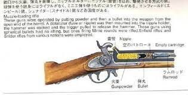
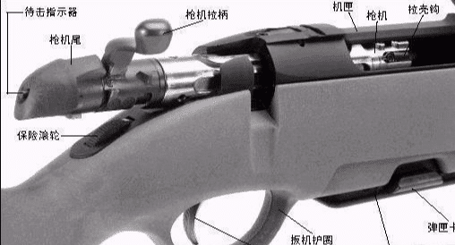
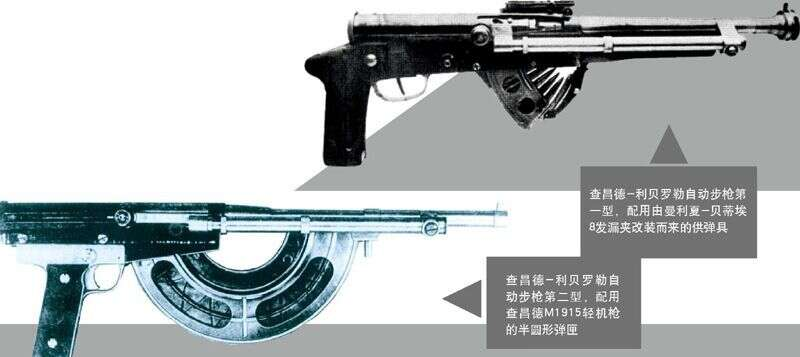

Navbar
首頁
(current)
輕武器圖例
簡介
位置
火繩槍:簡介
火繩槍，是以火繩點火裝置來點火的銃械。火繩點火裝置是以緩慢燃燒的火繩先點燃引火藥（底火），引火藥起火後再點燃推進藥的機構。
栓動步槍:簡介
採用直接拉動槍栓來完成子彈上膛的栓動步槍（bolt-action rifle）首見於普奧戰爭中普魯士軍隊所採用的德萊賽針發槍，直到二次世界大戰結束前是各國陸軍主要的步槍配備。戰爭結束後，半自動步槍、自動步槍與突擊步槍很快的取代栓式步槍的地位，普遍的配發到陸軍的各單位。由於栓式步槍準確度比一般自動步槍佳，所以並未完全退出軍用和警用的行列，而是轉換成為進行精確戰術射擊的狙擊步槍作配備，與自動步槍共同服役至今。
自動步槍:簡介
自動步槍指連續擊發、具備全自動射擊能力的步槍。利用推進彈頭的部分瓦斯或後座力進行退彈殼、裝彈並再次射擊的步槍，也就是說，只要扣住扳機不放，就能連續射擊，直到槍內子彈用盡。自動步槍包括了『戰鬥步槍』、『輕機槍|重管自動步槍』、『射手步槍』和『突擊步槍』等。
其他圖片


